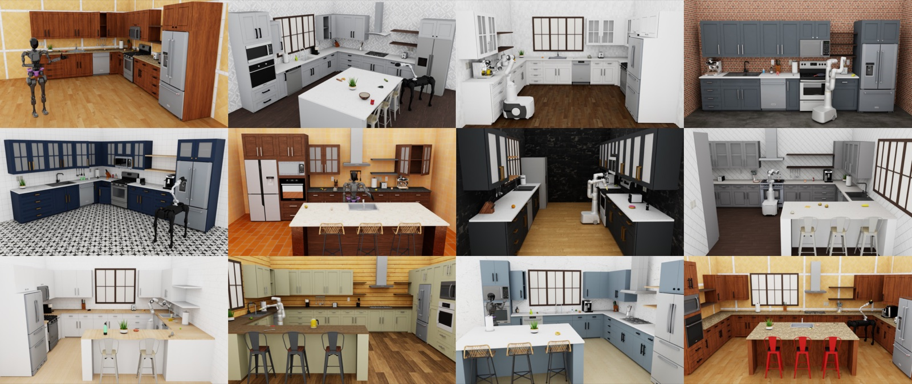

RoboCasa
官方榜单 ↗
类型 仿真指标 24 任务平均成功率行数 30官方数据日 2026-10本站拉取 2026-11-14
官方只运营 RoboCasa365 多任务榜，本榜为论文自报汇总，按任务集与训练演示数分四板。Long-WAM 原模型卡 73.33% 未能在论文中核对，改用论文 78.7%；其论文对照表混入 Kitchen 基线。
Long-WAM 以 19.2 s 上下文 78.7%，列 GR1 千演示组第一新
| # | 模型 | 24 任务平均成功率 | 协议 | 分榜 | 日期 | 状态 |
|---|---|---|---|---|---|---|
| 1 | Long-WAM NVIDIA · MIT · 港大 · UCSD |
78.7 |
GR1 TableTop 24 任务；训练集为 GR1 Tabletop 1K（每任务 1,000 段）；19.2 s 历史上下文；评测轮数未写明 |
GR1 TableTop 1000 演示 | 10 | 自报 |
| 2 | MWA-WALA 无界动力 + 中科院自动化所 |
75.2 |
GR1 TableTop 24 任务；按发布方通稿称平均任务成功率 75.2%，训练数据量与评测轮数未公开 |
GR1 TableTop 1000 演示 | 06 | 自报 |
| 3 | ACE-Ego-0 大晓机器人 + 港中文 MMLab |
72.8 |
GR1 TableTop 24 任务；每任务 50 rollouts；预训练含该基准 24 任务 × 1,000 段 |
GR1 TableTop 1000 演示 | 06 | 自报 |
| 4 | DIAL 小鹏机器人 · 港大 |
70.2 |
GR1 TableTop 24 任务；全数据 1,000 段/任务；每任务 50 回合；16 步动作块 |
GR1 TableTop 1000 演示 | 03 | 自报 |
| 5 | GALA 清华交叉信息研究院 · 上海期智研究院 |
68.3 |
GR1 TableTop 24 任务；多具身联合预训练；训练演示数与评测轮数未写明 |
GR1 TableTop 1000 演示 | 09 | 自报 |
| 6 | VLA-UniT 小鹏机器人 · 港大 · 清华 |
66.7 |
GR1 TableTop 24 任务；全数据 1,000 段/任务；每任务 50 回合；取拾放 67.3 / 关节物 64.7 |
GR1 TableTop 1000 演示 | 04 | 自报 |
| 7 | JoyAI-RA 0.1 京东 |
63.2 |
GR1 TableTop 24 任务；单模型联合训练；每任务 50 rollouts；训练演示数未写明 |
GR1 TableTop 1000 演示 | 04 | 自报 |
| 8 | ABot-M0 高德 AMAP CV Lab |
58.3 |
GR1 TableTop 24 任务；单模型联合训练；每任务 50 rollouts；29 维动作、16 步动作块 |
GR1 TableTop 1000 演示 | 02 | 自报 |
| 9 | FLARE NVIDIA |
55.0 |
GR1 TableTop 24 任务；每任务 50 回合；取最后 5 个检查点最高值；训练演示数未写明 |
GR1 TableTop 1000 演示 | 05 | 自报 |
| 10 | DiT4DiT Mondo Robotics · 港科大（广州） |
50.8 |
GR1 TableTop 24 任务；每任务 1,000 段人工遥操作；50 rollouts、上限 720 步；从零训练 |
GR1 TableTop 1000 演示 | 03 | 自报 |
| 11 | GR00T-N1.6 NVIDIA |
47.6 |
GR1 TableTop 24 任务；数据集每任务 1,000 段；README 未写评测轮数 |
GR1 TableTop 1000 演示 | 12 | 自报 |
| 12 | GR00T-N1.7 NVIDIA |
44.5 |
GR1 TableTop 24 任务；每任务约 20 回合；8 步动作目标；与上列 50 轮评测不完全可比 |
GR1 TableTop 1000 演示 | 05 | 自报 |
| 1 | DIAL（少样本） 小鹏机器人 · 港大 |
58.3 |
GR1 TableTop 24 任务；每任务 100 段（10% 数据）；40k 步；每任务 50 回合 |
GR1 TableTop 100 演示 | 03 | 自报 |
| 2 | GR00T-N1-2B NVIDIA |
50.0 |
GR1 TableTop 24 任务；每任务 100 段演示；100 回合、取末 5 个检查点最高值 |
GR1 TableTop 100 演示 | 03 | 自报 |
| 3 | VLA-UniT（少样本） 小鹏机器人 · 港大 · 清华 |
45.5 |
GR1 TableTop 24 任务；每任务 100 段（10% 数据）；其余同全数据设置 |
GR1 TableTop 100 演示 | 04 | 自报 |
| 4 | Diffusion Policy Columbia · TRI |
32.7 |
GR1 TableTop 24 任务；每任务 100 段；100 回合、取末 5 个检查点最高值；GR00T N1 论文复跑 |
GR1 TableTop 100 演示 | 03 | 自报 |
| 5 | BC Transformer UT Austin · NVIDIA |
16.1 |
GR1 TableTop 24 任务；每任务 100 段；100 回合、取末 5 个检查点最高值；GR00T N1 论文复跑 |
GR1 TableTop 100 演示 | 03 | 自报 |
| 1 | Cosmos Policy NVIDIA · Stanford |
67.1 |
Kitchen 24 任务；仅 50 段人工演示；每任务 50 回合 × 3 随机种子（共 3,600 回合） |
Kitchen 50 演示 | 01 | 自报 |
| 2 | Video Policy Columbia · TRI |
63% |
Kitchen 24 任务；50 段演示；每任务 50 rollouts、5 个场景；源表记作 0.63 |
Kitchen 50 演示 | 08 | 自报 |
| 3 | UVA Stanford |
50% |
Kitchen 24 任务；50 段演示；每任务 50 rollouts；由 Video Policy 作者复跑，源表记作 0.50 |
Kitchen 50 演示 | 08 | 自报 |
| 4 | BC Transformer UT Austin · NVIDIA |
28.8 |
Kitchen 24 任务；Human-50 数据档（每任务 50 段人工演示）；每任务 50 回合、5 个场景 |
Kitchen 50 演示 | 06 | 自报 |
| 1 | GR00T-N1.5 + HAMLET KAIST · RLWRLD |
66.4 |
Kitchen 24 任务；每任务 300 段；在 GR00T N1.5 上加载 HAMLET 历史感知模块 |
Kitchen 300 演示 | 10 | 自报 |
| 2 | FLARE NVIDIA |
66.4 |
Kitchen 24 任务；每任务 300 段；据 Cosmos Policy 论文汇总表；FLARE 原文未列该档数值 |
Kitchen 300 演示 | 05 | 自报 |
| 3 | Video Policy Columbia · TRI |
66% |
Kitchen 24 任务；300 段 MimicGen 演示；每任务 50 rollouts；源表记作 0.66 |
Kitchen 300 演示 | 08 | 自报 |
| 4 | GR00T-N1.5 NVIDIA |
64.1 |
Kitchen 24 任务；每任务 300 段；HAMLET 论文复跑该基线 |
Kitchen 300 演示 | 10 | 自报 |
| 5 | π0-FAST Physical Intelligence |
63.6 |
Kitchen 24 任务；每任务 300 段；HAMLET 论文复跑该基线 |
Kitchen 300 演示 | 10 | 自报 |
| 6 | π0 Physical Intelligence |
62.5 |
Kitchen 24 任务；每任务 300 段；HAMLET 论文复跑该基线 |
Kitchen 300 演示 | 10 | 自报 |
| 7 | GR00T-N1.5 + DUST KAIST · RLWRLD |
58.5 |
Kitchen 24 任务；每任务 300 段；冻结骨干 VLM 训练扩散动作专家 |
Kitchen 300 演示 | 10 | 自报 |
| 8 | GR00T-N1-2B NVIDIA |
49.6 |
Kitchen 24 任务；每任务 300 段 MimicGen 演示；100 回合、取末 5 个检查点最高值 |
Kitchen 300 演示 | 03 | 自报 |
| 9 | Diffusion Policy Columbia · TRI |
43.2 |
Kitchen 24 任务；每任务 300 段 MimicGen 演示；100 回合、取末 5 个检查点最高值 |
Kitchen 300 演示 | 03 | 自报 |